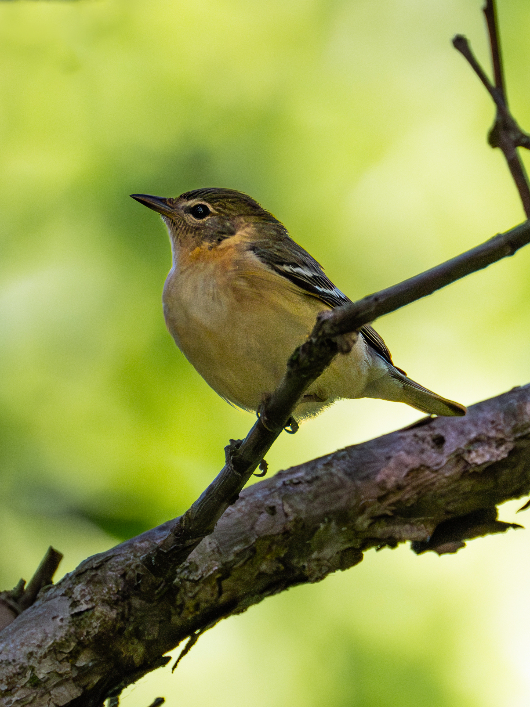
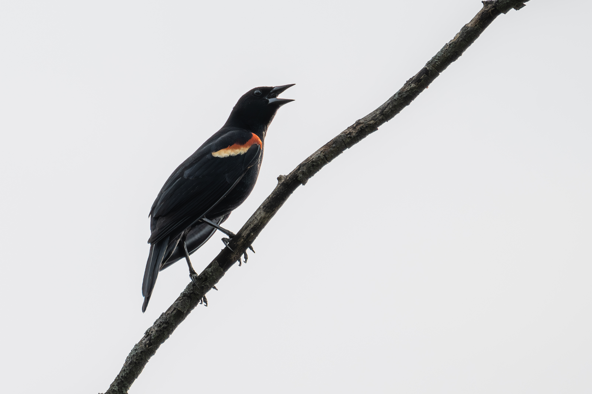
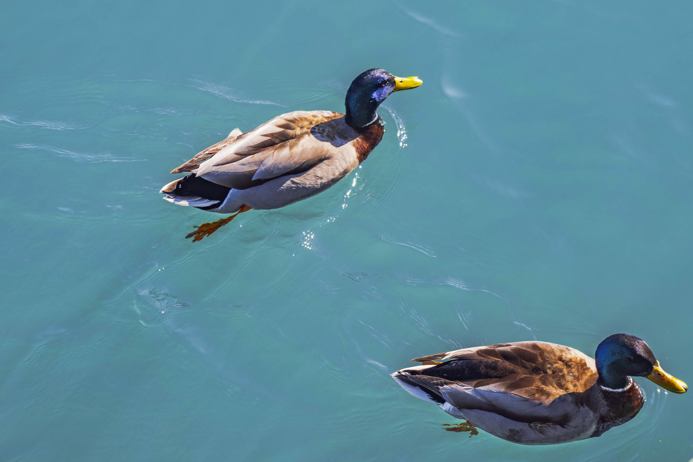
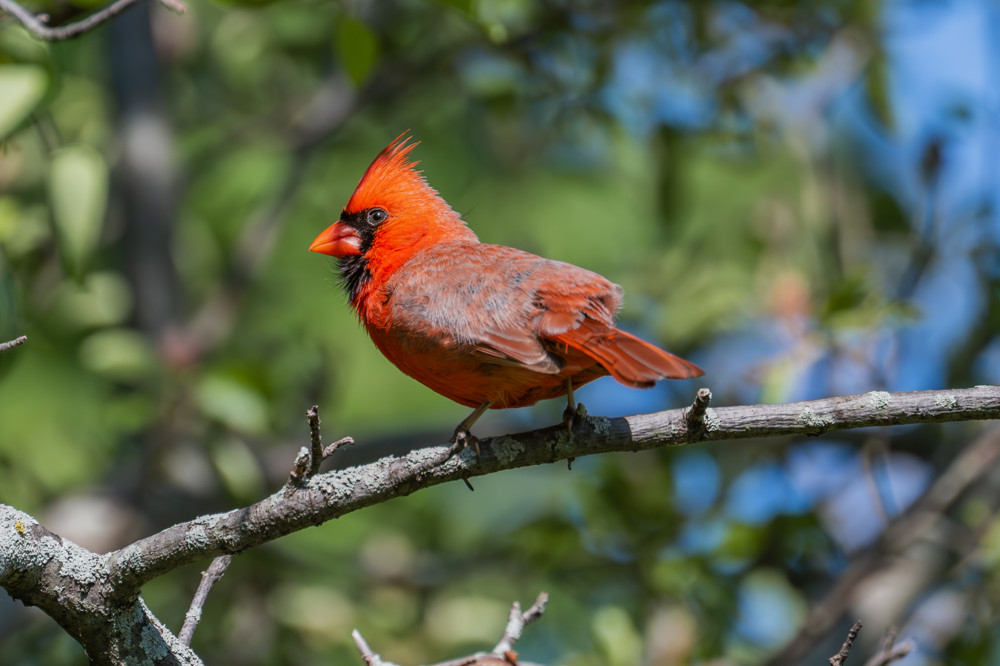
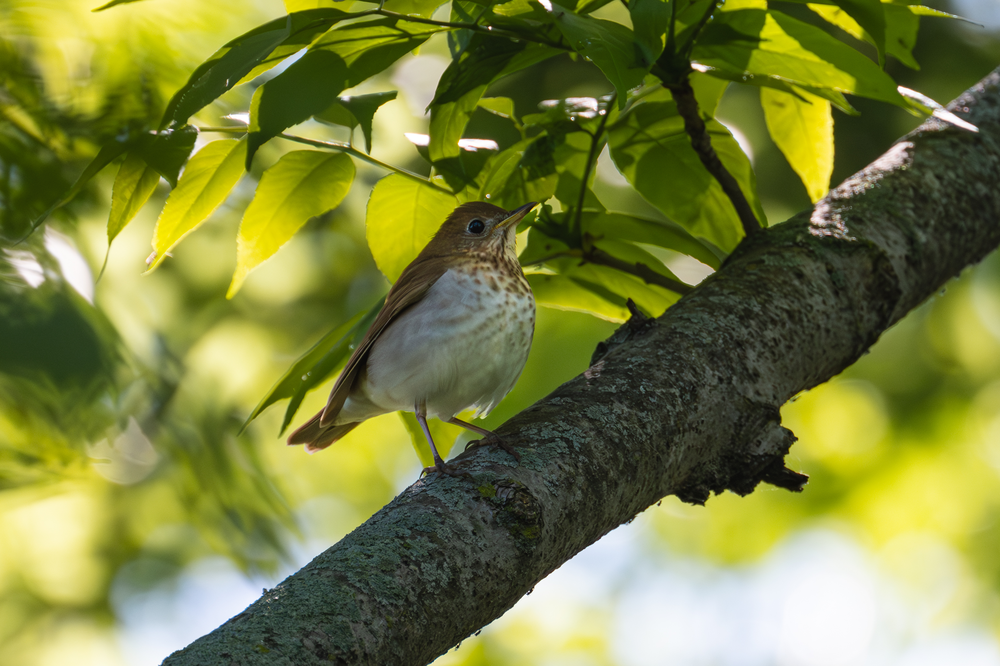

Back to Blog
 American Robin。城市公园里常见，但在枝头停下来的瞬间依然很耐看。
American Robin。城市公园里常见，但在枝头停下来的瞬间依然很耐看。
这个观鸟的位置就在市内，不用去到近郊，交通来说还是很方便的。封面是拍到的一只 American Robin，除此之外，这次还见到了 Northern Cardinal、Red-winged Blackbird、Common Grackle、Downy Woodpecker、Veery、Bay-breasted Warbler、Canada Goose、Mallard 等。拿到新镜头后第一次去拍鸟，希望以后有机会解锁新的物种。
我很喜欢 Montrose Point Bird Sanctuary 的一点，是它不像一个被完全规划好的景点。它更像城市和自然之间留出来的一小块缓冲区：湖风、草地、树丛、步道和鸟鸣混在一起。你可能一开始什么都看不到，但只要慢下来，声音和动静会逐渐变得清楚。
 American Robin。在草地里活动时，背景会更柔和，也更容易拍到自然的姿态。
American Robin。在草地里活动时，背景会更柔和，也更容易拍到自然的姿态。
 Bay-breasted Warbler。体型小、动作快，是这次最惊喜的鸟之一。
Bay-breasted Warbler。体型小、动作快，是这次最惊喜的鸟之一。

Bay-breasted Warbler。等它在枝头停住的一瞬间，比追着拍更有效。
这次使用的是 Nikon Z7II 和 Z 100-400mm f/4.5-5.6 VR S。对城市观鸟来说，这个焦段很实用：不用离鸟太近，也能保留一些环境信息。Montrose 的树丛和步道很多，鸟经常出现在枝叶之间，拍摄时除了对焦，最需要注意的是背景和遮挡。
拍小鸟的时候，耐心比连续按快门更重要。很多时候鸟会在同一片区域来回移动，只要站稳一点、动作轻一点，它们会自己进入更好的光线或背景里。尤其是 Warbler 这类小鸟，真正能看的画面往往只有几秒。
 Common Grackle。深色羽毛在阴影里很容易糊成一团，侧光会更能显示颜色。
Common Grackle。深色羽毛在阴影里很容易糊成一团，侧光会更能显示颜色。

Red-winged Blackbird。红色肩章很醒目，叫声也很有存在感。
除了林地里的小鸟，湖边和 Promontory Point 一带也很适合顺路看看。Canada Goose 和 Mallard 都很常见，但在蓝绿色湖水上拍出来，画面会有很干净的色块。它们不一定稀有，却很适合作为练习对象：观察光线、控制背景、等待水面纹理变化。
如果第一次来，我会建议先从 Montrose Point Bird Sanctuary 走起，再根据时间往湖边延伸。春末夏初鸟况比较活跃，早上通常会更好；如果只是周末随便走走，下午也能拍到不少城市里熟悉又可爱的小鸟。
 Canada Goose。湖面颜色很干净时，常见鸟也会变得很适合拍。
Canada Goose。湖面颜色很干净时，常见鸟也会变得很适合拍。

Mallard。水面的蓝绿色和羽毛颜色放在一起，会让画面很轻松。
 Northern Cardinal。红色非常醒目，适合在干净背景前等待姿态。
Northern Cardinal。红色非常醒目，适合在干净背景前等待姿态。

Northern Cardinal。地面上的红衣主教，颜色和环境反差更强。
这次的鸟种清单里，我最喜欢的是 Bay-breasted Warbler 和 Veery。前者因为很有迁徙季的惊喜感，后者则因为颜色安静、姿态温柔。它们不像 Cardinal 那样一眼抓人，但越看越有城市自然观察的乐趣。

Veery。温柔的褐色和浅色腹部，很适合放在绿色背景里。
 Downy Woodpecker。树干上的停顿很短，拍摄时要提前找好焦点位置。
Downy Woodpecker。树干上的停顿很短，拍摄时要提前找好焦点位置。
这次记录到的主要鸟种包括：American Robin、Common Grackle、Canada Goose、Bay-breasted Warbler、Veery、Red-winged Blackbird、Northern Cardinal、Downy Woodpecker 和 Mallard。清单不算很长，但作为一次城市里的周末观鸟，已经足够让人开心。
我喜欢这样的拍摄：不用离开城市太远，也不需要特别宏大的目的地，只是在公园、湖边和树丛之间慢慢走，看见一点平时容易错过的生命。对我来说，这也是芝加哥很可爱的地方。